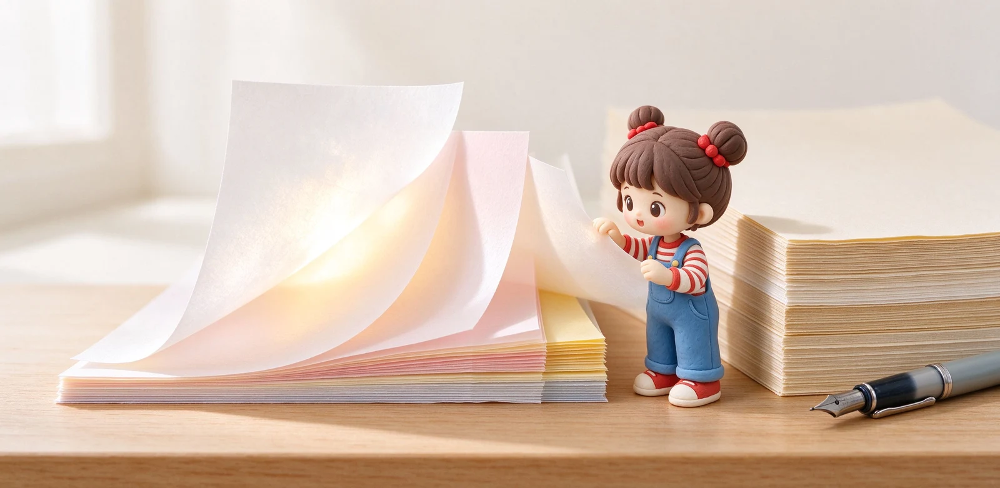

語意摘要：GSM 代表一平方公尺紙的重量，單位公克，數字越大通常紙越厚、越不透背。台灣常見筆記本紙落在 70g 到 80g：Moleskine 約 70g、KOKUYO Campus 約 75g、MD 與 Rhodia 約 80g，超薄的巴川紙只有 52g 卻靠加工做到鋼筆不暈。選紙要看克重、表面加工與用途，而不是單純追求越厚越好。
GSM 到底是什麼？跟厚度不是同一件事
GSM（g/m²）指的是「一平方公尺這張紙有幾公克重」。同樣一平方公尺，紙越密實、越厚，稱起來就越重，所以 GSM 大致能代表厚薄。但它不是厚度：同樣 80g，用長纖維還是短纖維紙漿、壓得緊不緊，實際摸起來的厚薄與觸感會有差。
你可以把它想成「這張紙料多不料多」。數字小代表料少、紙輕薄；數字大代表料多、紙厚挺。筆記本標的 GSM，就是告訴你它在這個光譜的哪一端。
常見克重對照：52g 到 100g 分別什麼感覺
| 克重 | 代表紙張 | 手感 | 鋼筆表現 |
|---|---|---|---|
| 52g | 巴川紙 Tomoe River | 超薄、軟、翻頁輕 | 加工過不暈墨，但反面會透背 |
| 70g | Moleskine 經典款 | 薄、略滑 | 鋼筆容易透背、偶爾暈 |
| 75g | KOKUYO Campus | 輕薄好寫、約 0.10mm | 中性筆順，鋼筆看墨量 |
| 80g | MD 用紙、Rhodia | 厚實、有阻尼 | 鋼筆適性佳、不透不暈 |
| 90g | Clairefontaine | 厚、極滑 | 鋼筆表現優，乾較慢 |
| 100g 以上 | 水彩紙、厚卡紙 | 很硬、很挺 | 任何筆都不怕，但本子厚重 |

透頁與暈墨不是同一回事
選鋼筆紙常聽到兩個詞，意思不一樣：暈墨（bleed）是墨水鑽進紙纖維、向旁邊暈開，字跡邊緣毛毛的；透頁（show-through / ghosting）是墨水從背面看得見，但正面字跡是乾淨的。
薄紙如 52g 巴川紙，正面寫起來幾乎不暈，但你翻到背面會隱約看到前一頁的字，這就是透背。厚紙如 80g 以上，正反面都乾淨，但本子變重。所以「超薄紙不暈但會透、厚紙不透但本重」是常見的取捨。
一般人怎麼挑克重？依用途抓重點
大量書寫、便宜為先
學生課堂筆記用中性筆，70g 到 75g 就很夠，紙輕、便宜、本子不會厚到背不動。這個等級鋼筆不一定撐得住，但中性筆與原子筆寫起來剛好。
鋼筆與手帳愛好者
要用鋼筆、又不想看到透背，選 80g 上下、標榜鋼筆適性的紙最穩。如果喜歡超薄輕盈、又能接受反面透字，巴川紙 52g 是另一種極致體驗。
畫圖、水彩、麥克筆
這類用墨水多、水量大，70g、80g 都不夠，要直接上 160g 以上的水彩紙或厚卡紙，否則一畫就皺、就透。
看紙標示還能問哪些問題
- 克重多少？日常 75g、鋼筆 80g 以上、水彩 160g 以上。
- 有沒有上質或特殊加工？表面處理會影響滑度與抗暈。
- 是中性紙還是酸性紙？中性紙不易泛黃、適合長期保存。
- 透光看一下：對光舉起本子，背面字影多明顯，就知道透頁程度。
常見問題 FAQ
GSM 越高紙就越厚越好嗎？
為什麼 52g 的巴川紙這麼薄還能用鋼筆？
一般中性筆寫字，紙要選幾克重？
鋼筆最建議用幾克重的紙？
怎麼自己判斷一本紙會不會透頁？
資料來源與核實依據
- キャンパスルーズリーフ 紙厚 75g/m2・0.10mm程度（KOKUYO 公式オンラインショップ）
- Tomoe River White 52gsm（52g/m² 超薄紙規格）（Bookbinders Design）
- MD PAPER 80g/m²（A5 176 頁）（IRO / MIDORI）
- Moleskine 70g/m² acid-free ivory paper（B2B 型錄）（Moleskine）
相關文章推薦

鋼筆專用紙怎麼選？巴川、三河塼、MD 用紙抗暈透比較
鋼筆紙分兩派：超薄派的巴川紙 52g 幾乎不暈但會透背，厚實派的 MD 用紙 80g 正反面都乾淨；選哪派看你要輕盈還是要整潔。

筆記本怎麼選？尺寸、版型、用途與預算的抉擇順序
選筆記本順序搞反最容易後悔：先想你拿它來做什麼、每天帶不帶出門，再決定尺寸與版型，最後才看封面好不好看。

MD 筆記本為何經典？Midori 系列、奶油用紙與鋼筆適性解析
MD 筆記本勝在一個「穩」字：80g 奶油色 MD 用紙、穿線裝訂能完全平攤，鋼筆好寫又不張揚，難怪做了十年還是經典。